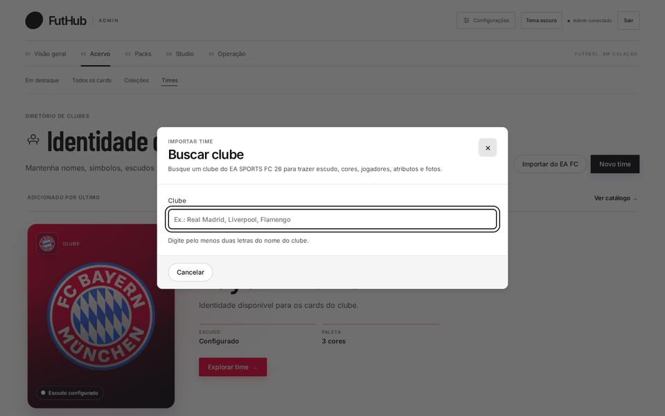
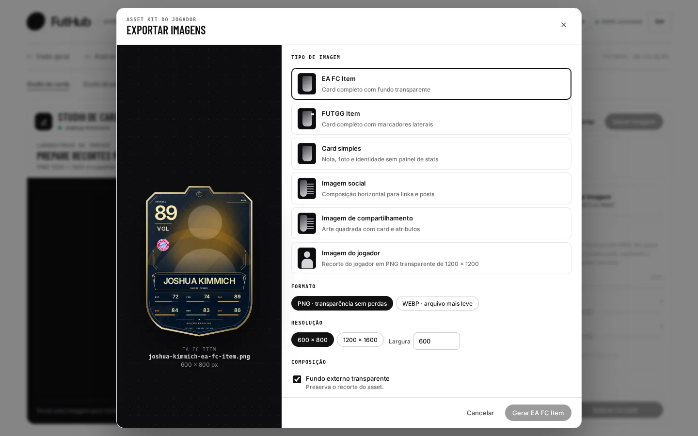

Início / Como funciona
Como funciona
Do elenco real ao card no Discord.
Este é o fluxo principal do painel, passo a passo e com as telas reais: um clube vira coleção, os jogadores viram cards, os cards entram num pack, e o pack chega à loja com uma economia ajustada.
Importe o elenco
Em Times, “Importar do EA FC” busca o clube e mostra o elenco com overall. Desmarque quem não entra e escolha o time e a coleção de destino.

Dê identidade à edição
Uma coleção, como “Lendas”, agrupa os cards da edição e define as cores. É ela que você vai usar depois para limitar o que sai num pack.

Desenhe cada card
Abra o jogador no Studio. O Smart Fill traz os dados, a foto vem do TheSportsDB e você escolhe paleta e acabamento, conferindo nas prévias Card, Discord, Mobile e Arte.

Exporte o kit
Item EA FC, item FUTGG, imagem social e recorte transparente do jogador saem do mesmo card, em PNG ou WebP, prontos para anunciar a edição.

Embale num pack
No Studio de packs, escolha a direção de arte e teste a abertura puxando o lacre.

Ponha à venda com regras
Defina cartas por pack, preço em moedas e limite por jogador. Na elegibilidade, restrinja à nova coleção e a uma faixa de overall.

Calibre a economia
Ajuste o /lucro para que os jogadores juntem moedas no ritmo certo para comprar o pack novo. A distribuição ao vivo mostra quanto cada resgate paga em média.

Escreva o que o bot diz
Ajuste a mensagem que o jogador recebe, com variáveis, listas e imagens, e confira na prévia do Discord antes de salvar.

Antes e depois
O que muda na rotina.
- Cards montados num editor de imagem e enviados à mão
- Dados do jogador copiados de várias fontes
- Preço de pack e recompensas mudados direto no banco
- Texto do bot alterado no código, com deploy
- O card é montado e exportado no Studio
- Elenco, atributos e fotos importados do EA FC e do TheSportsDB
- Oferta e economia ajustadas em formulários, com simulação
- Respostas editadas com prévia, sem deploy
FutHub Admin
Pronto para ver em detalhe?
Cada etapa tem uma página própria, com mais telas, dicas e o que acontece por trás.